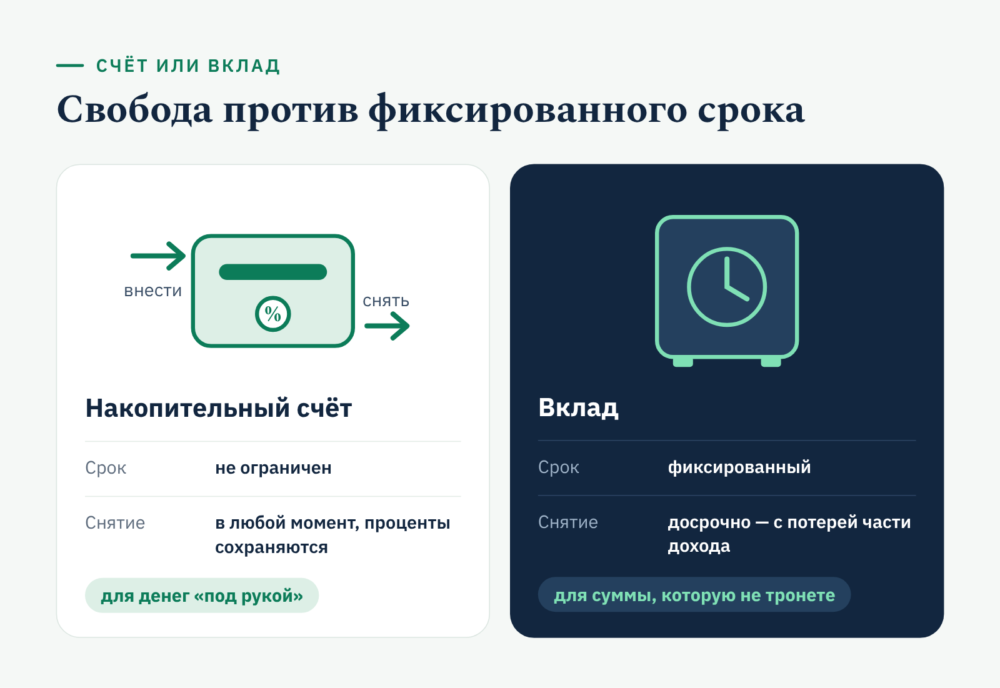
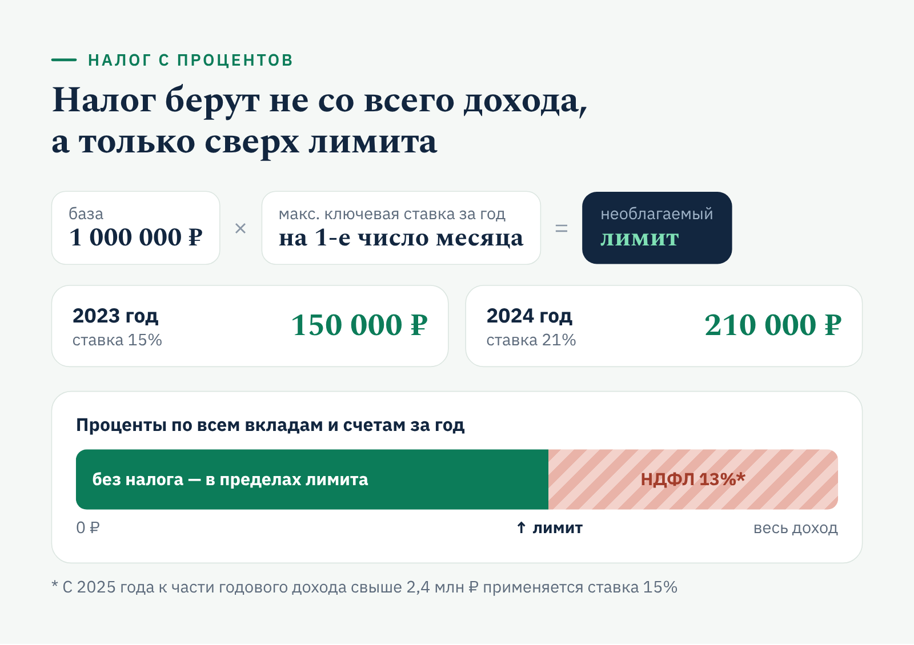

«Финуслуги» · YMYL · FAQ
FAQ для финансового маркетплейса: накопительный счёт Газпромбанка
О заказчике«Финуслуги» — финансовая платформа, созданная Московской биржей в рамках проекта Банка России «Маркетплейс». На ней можно онлайн открыть вклад, оформить ОСАГО и другие страховки, купить народные облигации, паи фондов и подключиться к программе долгосрочных сбережений.
Задача
Подготовить блок FAQ для продуктовой страницы маркетплейса «Накопительный счёт Газпромбанка»: короткие ответы на вопросы, которые клиент задаёт перед открытием счёта.
Решение
Собрала девять вопросов по пути клиента — от сути продукта и отличия от вклада до открытия, пополнения, снятия, закрытия, страхования и налога. Ответы короткие, со списками и пошаговыми инструкциями; условия банка помечены датой подготовки текста.
Результат
Формат FAQ для продуктовой страницы: каждый ответ закрывает один вопрос и подводит к открытию счёта, а схемы наглядно показывают разницу между счётом и вкладом и порядок расчёта налога с процентов.
Накопительный счёт Газпромбанка: ответы на частые вопросы
Коротко отвечаем на вопросы, которые чаще всего возникают перед открытием накопительного счёта: как его открыть и пополнить, как вывести деньги, застрахованы ли они и какой налог придётся заплатить.
Условия банка приведены на момент подготовки текста (январь 2025 года). Ставки и тарифы меняются — актуальные значения указаны в карточке продукта.
Что представляет собой накопительный счёт в Газпромбанке?
Накопительный счёт в Газпромбанке — банковский продукт для постепенного накопления денег. Клиент вносит и выводит суммы в любое время, не теряя начисленные проценты. Ставка складывается из базовой и бонусной части: надбавки повышают доходность при выполнении условий банка. Формат подходит тем, кто хочет свободно распоряжаться накоплениями.
Чем накопительный счёт отличается от вклада?
Вклад открывают на фиксированный срок, и досрочно снять деньги без потерь нельзя: частичное изъятие обычно оборачивается потерей части дохода.

Накопительный счёт позволяет распоряжаться деньгами без потери уже заработанных процентов: доступ к средствам открыт в любой момент. Поэтому счёт гибче вклада и удобнее для денег, которые могут понадобиться в любой день.
Как открыть накопительный счёт в Газпромбанке?
Открыть счёт можно тремя способами:
- в мобильном приложении или интернет-банке Газпромбанка;
- в отделении банка при личном визите;
- через контакт-центр по телефону 8-800-100-07-01.
Новым клиентам удобнее сначала оформить дебетовую карту банка: через неё проще управлять накоплениями дистанционно.
Как пополнить накопительный счёт?
Пополнить счёт можно несколькими способами:
- переводом в мобильном приложении или интернет-банке;
- переводом из другого банка — по СБП, по реквизитам или с карты на карту;
- наличными в кассе или банкомате Газпромбанка.
Перевод из другого банка сначала зачисляется на карту Газпромбанка, а затем его направляют на накопительный счёт в приложении или интернет-банке.
Как снять деньги с накопительного счёта?
Порядок простой:
- Переведите нужную сумму на дебетовую карту в приложении или интернет-банке.
- Снимите наличные в любом банкомате.
- Или обратитесь в отделение с паспортом, чтобы получить деньги со счёта напрямую.
Способ выбирайте по ситуации: начисленные проценты при снятии сохраняются.
Как закрыть накопительный счёт?
Закрыть счёт можно двумя способами:
- в мобильном приложении или интернет-банке — в разделе «Счета», командой «Закрыть счёт»;
- в отделении банка с паспортом — сотрудник оформит заявку на закрытие.
Перед закрытием остаток на счёте обнуляется, а начисленные проценты выплачиваются в полном объёме.
Застрахованы ли накопительные счета?
Да. Деньги на накопительных счетах Газпромбанка защищены системой страхования вкладов. Если у банка отзовут лицензию, Агентство по страхованию вкладов вернёт до 1,4 млн рублей — вместе с остатком и начисленными процентами. Лимит действует на все счета и вклады одного клиента в одном банке.
Можно ли расплачиваться деньгами с накопительного счёта?
Напрямую — нет: счёт предназначен для накоплений, а не для покупок. Сначала нужную сумму переводят на дебетовую карту, затем оплачивают покупки картой. Начисленный доход при этом сохраняется.
Если счёт используется активно, переводы на карту лучше планировать заранее — так оплата не задержится в неподходящий момент.
Нужно ли платить налог с дохода по накопительному счёту?
Да, проценты облагаются НДФЛ, но только в части, которая превышает необлагаемый лимит. Лимит равен 1 млн рублей, умноженному на максимальную ключевую ставку Банка России на 1-е число каждого месяца календарного года. Учитывается совокупный процентный доход по всем вкладам и счетам во всех банках.
Например, за 2023 год необлагаемый доход составил 150 000 рублей (1 000 000 × 15%), за 2024 год — 210 000 рублей (1 000 000 × 21%). Налог платят только с суммы сверх лимита: по ставке 13%, а с 2025 года к части годового дохода свыше 2,4 млн рублей применяется ставка 15%.

Самостоятельно считать налог не нужно: ФНС рассчитывает его по данным банков и присылает уведомление, а заплатить налог нужно до 1 декабря следующего года.